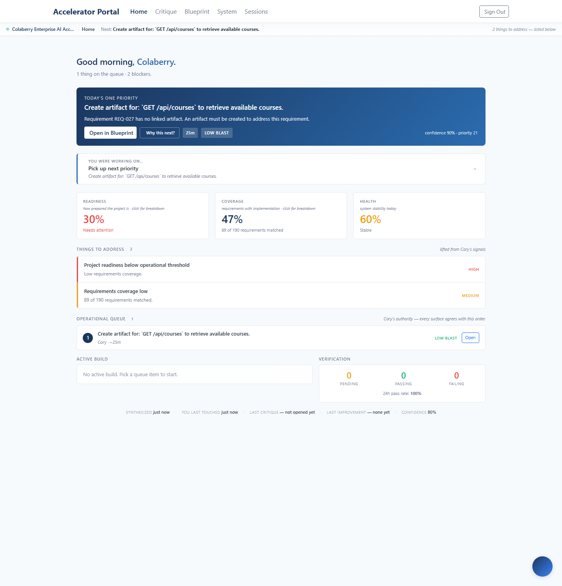
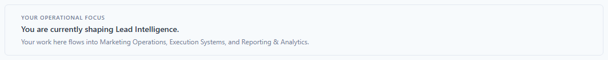
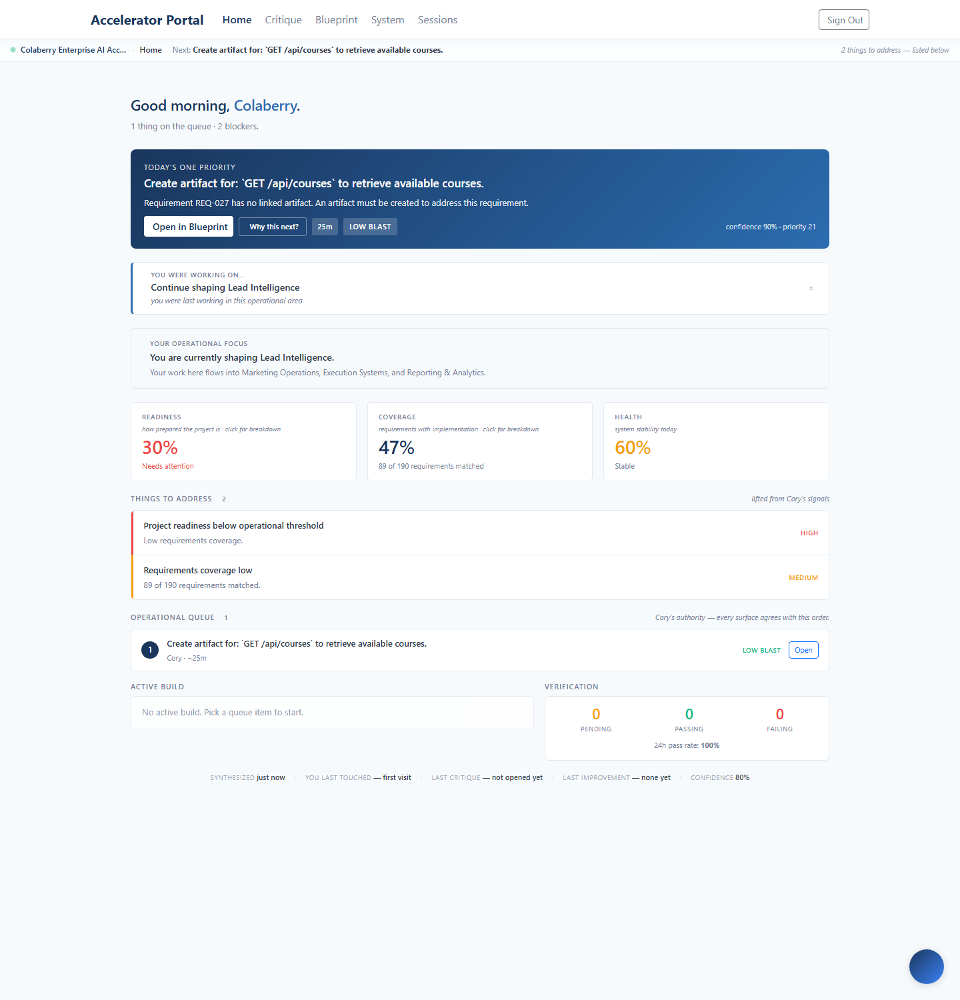
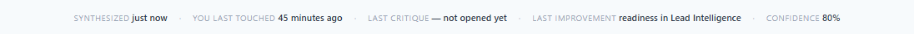

Shipped 2026-05-15 to enterprise.colaberry.ai (commit
7c41fac). The previous sprint taught the system to communicate
architecture, causality, and operational pressure. This one teaches it to
communicate the operator's place inside the system — where their
attention is, what their work influences downstream, and what's moved while
they were shaping it.
operatorOrientationLanguage.ts) and are asserted by
unit tests.
The control. Same Cory Home, captured against production with an empty workspace memory. There's a priority card, three tiles, the queue, an active-build slot, and a history strip — but nothing on this page says where the operator is shaping the system, nor what their work influences.

After the operator engages Lead Intelligence on the System BPs surface (click a flow-strip stop, expand a row, or click a relationship chip), Cory Home reflects that focus back to them on their next visit. One calm block, three sentences in order: where → what it influences → did anything move while you were shaping it (honest temporal correlation, not claimed causation).

The card in the natural Home context, after engaging Lead Intelligence:

OperatorFocusCard.tsx — calm block under ContinuationCard. No buttons, no metrics, no chrome. Renders nothing when there's no focus signal.useOperatorFocus derives { domain, confidence: 'recent' | 'ambient', minutesSince } from lastBpDomain in workspace memory. Pure derivation — no fetch.BPDomainSurface writes lastBpDomain only on explicit operator engagement (expand, flow-strip click, relationship-chip click). Never on the system's auto-expand of the first domain.bpDomainClassifier.getDomainProfile(key) — static domain identity (label, icon, relationships, downstream labels) with zero BP data needed, so Home doesn't fetch the BP list.The ContinuationCard used to say "Return to System understanding" when
the operator left off on a System tab — navigation framing. When a focus
domain is known, it now says "Continue shaping Lead
Intelligence" — operator-impact framing. Same hook (useActivePath),
same target route, different language.
| Before | After |
|---|---|
| "Return to System understanding" last on bps tab · BP 7e2b… |
"Continue shaping Lead Intelligence" you were last working in this operational area |
| Navigation "go back to a tab" | Impact "continue shaping the system" |
useActivePath branch (priority 4a, before the existing System-tab branches): when memory.lastBpDomain && memory.lastBpDomainLabel, returns operator-impact framing.The OperationalHistoryStrip already showed four ambient pieces
(Synthesized · You last touched · Last critique · Confidence). It now
carries a fifth — Last improvement — sourced from a new
lastContribution memory written on leave when the operator
made forward motion this visit. Not a feed. Not a log. Exactly one
value, overwritten each time.

Captured here with seeded contribution memory to demonstrate the populated state. In an empty state the piece reads "— none yet" — same graceful fallback as the other strip pieces.
OperatorContribution field on WorkspaceMemory: { domainLabel, signal, at }.netForwardMotion > 0 AND a focus domain exists. The signal is picked via dominantSignal(momentum) — readiness > coverage > health > queue.contributionLine(memory.lastContribution) → renders "<signal> in <domain>" or "— none yet".The impact line is the most psychologically loaded sentence on Cory Home. It would be very easy to write something like "Your work strengthened readiness by 4 points" — but that's a claim of causation we cannot honestly make. The operator was in this domain while readiness moved. The work and the movement are temporally correlated; we don't know they are causally connected.
| Forbidden framing | Shipped framing |
|---|---|
| "Your work strengthened readiness by 4 points." | "While you were shaping Lead Intelligence, readiness strengthened." |
| "Thanks to your effort in Intake, coverage expanded." | "While you were shaping Intake, coverage expanded." |
| "You cleared 3 queue items." | "While you were shaping Lead Intelligence, the queue got lighter." |
| Claimed causation | Temporal correlation |
operatorOrientationLanguage.ts.null when there is nothing meaningful to say — surfaces render nothing rather than fall back to filler.Scanned every workspace surface for drift toward streaks, points, rewards, congratulation, or consumer-SaaS energy. The audit was largely clean — one drift found and fixed.
| Surface | Audit finding | Action |
|---|---|---|
| RecentlyMovedCard captions | "project is more prepared", "more requirements matched", "items shipped or no longer needed" — calm, factual. | No change |
| OperationalHistoryStrip eyebrows | 11px muted text, no badges, no buttons. "Last improvement" added in line with existing tone. | No change |
| Drawer titleBadges | Status pills (band, count) — not gamification badges. | No change |
| CoryDrawer per-surface suggestions | "Cory at Home decides next", "compiled prompt waiting" — operational, not exhortative. | No change |
| Arrival-toast icon (CoryHome) | bi-emoji-smile — read consumer-SaaS for the enterprise-exec audience. | Swapped → bi-arrow-up-right |
The operator can now see, on Cory Home, where they're shaping the system, what their work flows into downstream, and an honest note on motion while they were there — derived purely from continuity signals they themselves produced. No backend, no tracking, no analytics. Twelve files (5 new), 186 tests passing (23 new), production deployed and verified.
The two anti-scope guardrails the plan called out were honored: no operator analytics (the focus signal is what the operator clicked, not what we inferred); no gamification (the only drift, a smiley toast icon, was caught and fixed).